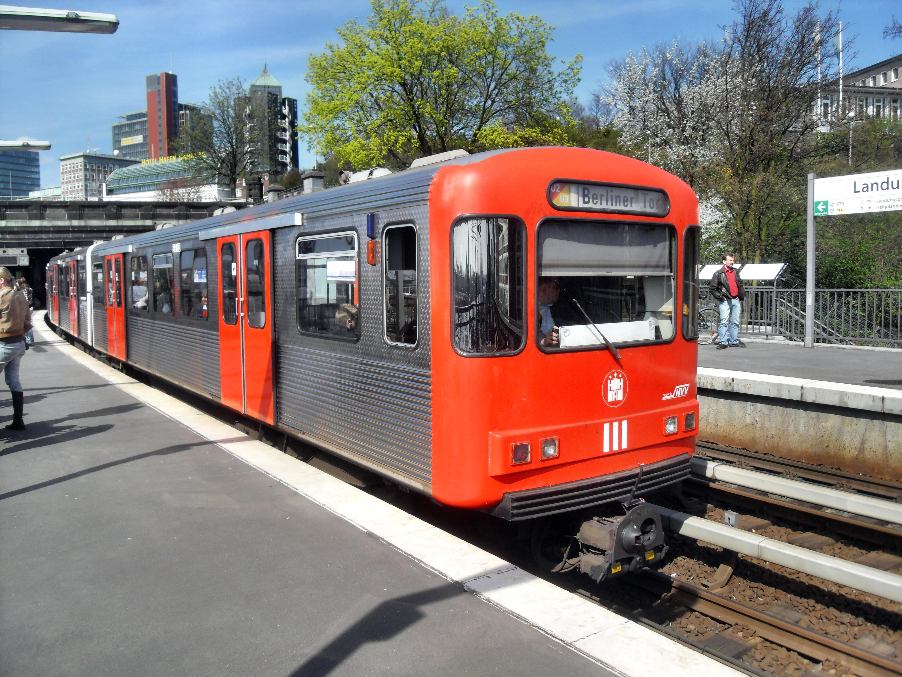

DT3

- Backride 🠆 Nein
- Länge 🠆 39,5m
- Haupteinsatz 🠆 U3, einzelne Fahrten auf U1
DT3 (Doppeltriebwagen 3) ist die Bezeichnung von U-Bahn-Triebfahrzeugen, die bei der Hamburger U-Bahn heute hauptsächlich auf der Linie U3 und gelegentlich auf der Linie U1 zum Einsatz kommen. Die Fahrzeuge wurden von 1968 bis 1971 produziert und sind bis Heute im Einsatz.
Es gibt von dieser dreiteiligen Baureihe drei verschiedene Varianten, die jedoch alle nicht für Front- und Backrides geeignet sind. Beim Zwischenride kann man sich fast gar nicht festhalten. Einzig und alleine die Steigbügel an jeder dritten Tür können zusammen mit den Türgriffen für einen Seiten-Ride verwendet werden. Die Türen bei der Fahrt nicht öffnen (der Zugfahrer sieht dann ein Warnlicht). Die Abstände zu Wand und Hindernissen sind echt schmal; es besteht akute Lebensgefahr. Siehe auch Transfer.
Die DT3-E sind modernisierte Fahrzeuge, deren Optik sich etwas den DT-4 annähert. Auffällig ist an der Vorderseite das große Fenster.
Die DT3-LZB wurde ursprünglich für den automatisierten Fahrbetrieb entwickelt. Erkennbar ist dieses Fahrzeug an dem schmaleren Fenster hinter der Fahrerkabine, und dass sich dahinter Längssitze statt Quersitze befinden.